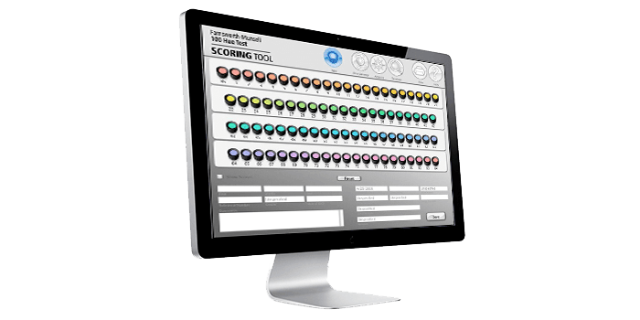
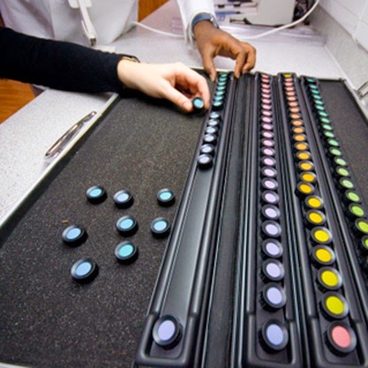

¿Para qué sirve el Test de Farnsworth?
A diferencia de las láminas de números, el Test de Farnsworth evalúa la capacidad del ojo para distinguir transiciones sutiles entre tonalidades vecinas. Permite orientar no solo déficits rojo-verde (Protan y Deutan), sino también del eje azul-amarillo (Tritan).
En su formato clínico clásico (D-15 o 100 tonos), la persona se ubica frente a una superficie negra neutra y debe ordenar una serie de cápsulas de colores partiendo de una ficha de referencia fija.
Realización paso a paso
Se toma una ficha inicial fija como ancla y se colocan a su lado las fichas más parecidas en matiz, formando un degradado continuo sin saltos bruscos.
En nuestra versión digital renovada podés elegir entre el Modo Rápido de 15 fichas (ideal para niños y diagnóstico ágil) o el Modo Completo de 85 fichas por bandejas, tanto con mouse como tocando en pantalla desde el celular.
